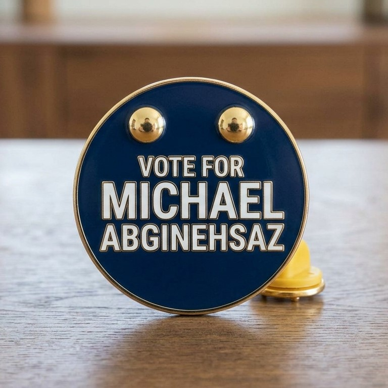

Mrs. Sandra Cruz

Ms. Shapell Mullings
To get our endorsements we will collaborate with interest groups and their developers to help with our connections with the voters directly. In order to reach these interest groups and the public's attention, we will create advertisements in the form of videos and posters that will showcase Michael’s promises and beliefs.
